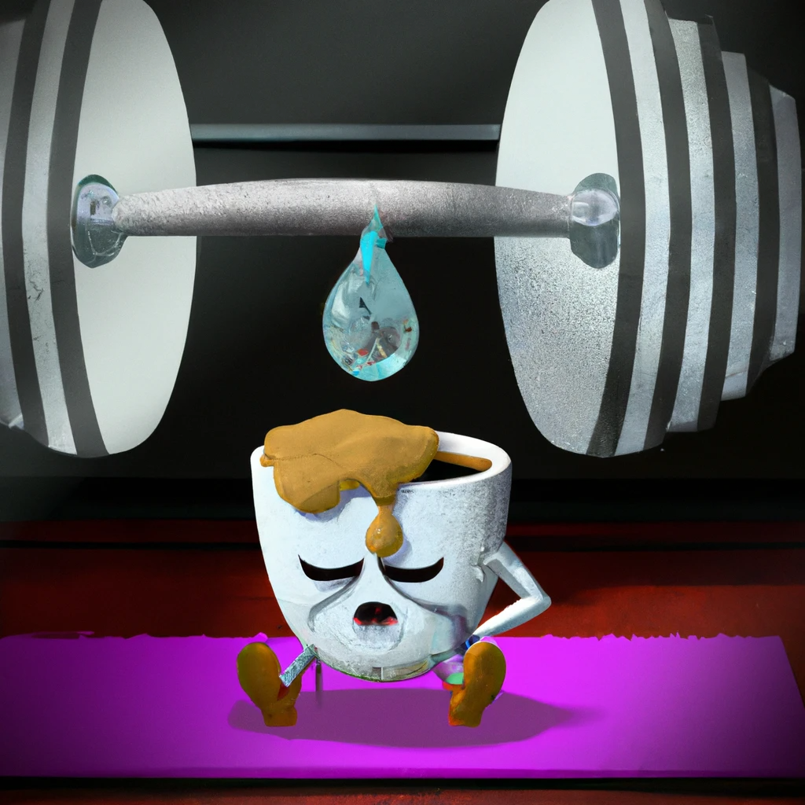
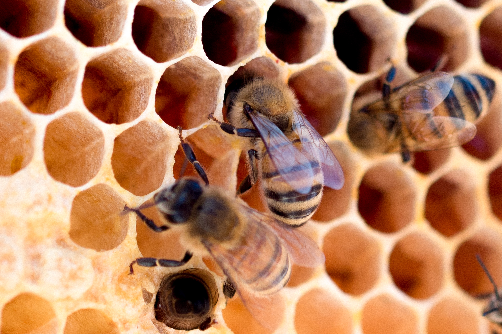

In this project, we will use GoalZone Fitness club's dataset to build and evaluate two classification Machine Learning models (Logistic Regression and XGBoost with SMOTE) in Python. GoalZone will use the best model to predict
gym attendance. This will help determine whether the gym should make another space available.

Photo created from on DALLE2

Photo from on DataCamp
Using audio music data, we will be building machine learning models to predict music genres (Hip-Hop or Rock). The classification ML models include Logistic Regression, Decision Tree and XGBoost. The best model will be chosen based on a chosen performance metric.

Photo by Meggyn
Pomerleau on Unsplash
This project will use the Python image library Pillow to manipulate bee images, then build a machine learning model to
identify bee species. The goal is to enhance field data collection by quickly and accurately distinguishing between
honey bees and bumble bees. Deep learning techniques will also be leveraged to further improve the model's accuracy.

Photo by Tierra Mallorca on Unsplash
In this project, we aim to build and evaluate a robust XGBoost regression model using the Iowa housing dataset.
Our
goal is to identify the top 20 influential features that have the greatest impact on the house price and use
these
features to make predictions. The process will be implemented in Python.

Photo from on Venturebeat
We will be using Python to explore the GitHub history of the Scala language to figure out who has had the most influence on its development and who are the experts.

Photo from on Tradebrains
In this project, we analyze the investment potential and risk of Amazon and Facebook using the Sharpe Ratio and pandas.
The Sharpe Ratio, a metric developed by Nobel Prize winner William Sharpe, compares the return of an investment to an
alternative while considering its risk (measured by the standard deviation of returns). Real financial data is used in the
project for analysis.
Photo by Mélissa Jeanty on Unsplash
In this project, we will explore the impact of handwashing on patient outcomes at two maternal clinics. Using
statistical analysis and machine learning in Python, we will analyze the available data and determine the significance
of handwashing on patient health outcomes. The goal is to provide insights and recommendations for improving maternal
health care.